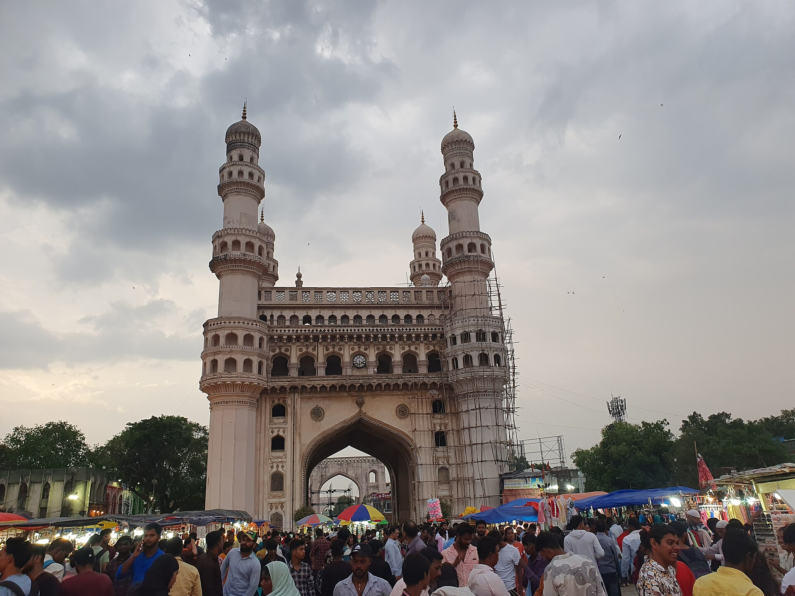

AuxoAI pairs forward deployed engineers with agentic AI to deploy production grade systems for G2000 enterprises. Strategy to production in weeks.
The knowledge that matters most rarely lives in a system. Pick a function, then capture each piece.
Nothing captured yet.
A sketch made for this concept from the wording on auxoai.com. It is not AuxoAI output or the Damia product.
The knowledge that matters most rarely lives in a system.auxoai.com/damia, wording credited to AuxoAI
Segments are equal because AuxoAI does not publish stage durations. Wording from auxoai.com/company.
Series A, led by NTTVC (Inc42, 21 October 2026).
Clients over three years, across manufacturing, healthcare, consumer goods and telecom, as the company says (Inc42, 21 October 2026).
Faster time to value, as stated on the Damia page (auxoai.com/damia).
Founded in 2023, AuxoAI plans to use the new money to deepen ecosystem partnerships, grow its team of forward deployed engineers, and invest in its technology, including Damia, its “AI workbench for enterprise delivery”.
Make AI real for enterprises, not by accumulating pilots, but by redesigning how decisions are made and how work flows.
Email the team at info@auxoai.com